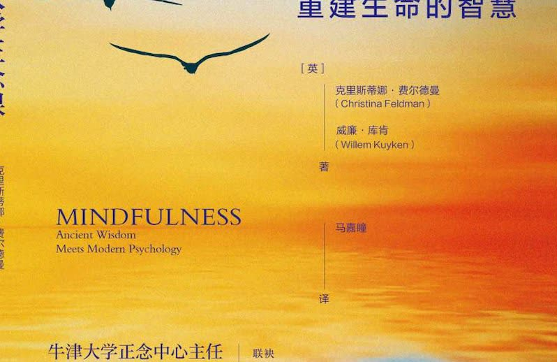
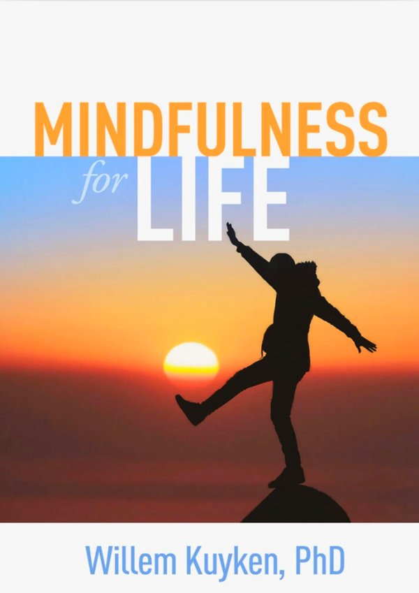
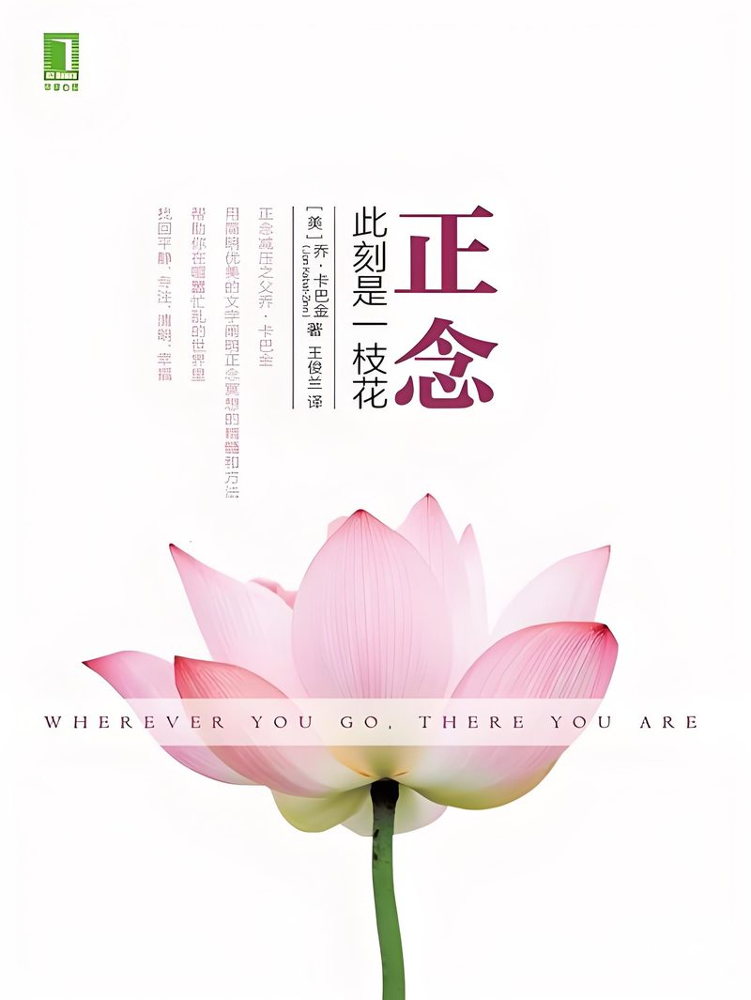
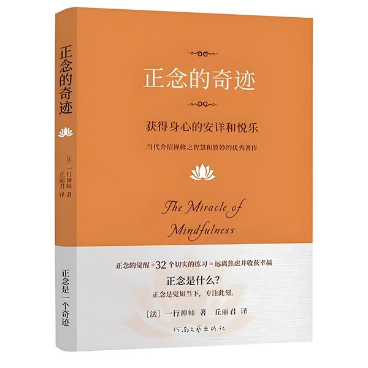
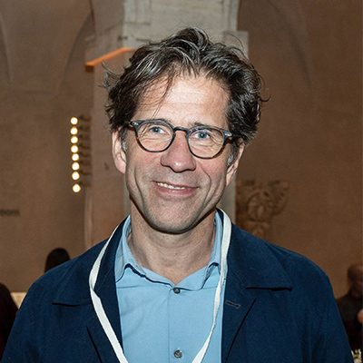

以阅读为入口，以带领为深化，走进正念生活的核心
正念共读计划旨在通过集体阅读与分享，帮助参与者深入理解正念理念，将正念融入日常生活。每期共读围绕一本经典正念著作展开，由专业带领者引导讨论与练习。

Mindfulness for Life 经典共读，8周深度阅读与实践
了解详情
正念入门经典，适合零基础参与者
了解详情带领者计划是为有志于推广正念共读的伙伴设计的培训项目。通过系统培训，帮助你成为一名合格的正念共读带领者，在社区中传播正念的种子。
成为带领者，不仅是服务他人，更是自我修行的深化。
系统性正念训练体系，从入门到深化

以阅读为入口，与同伴共同开启正念之旅。

零基础开始的正念旅程，三天时间建立正念冥想的基本习惯。

牛津大学正念中心研发的核心课程，系统学习正念认知疗法。

在八周课程基础上深入修习，建立终身正念练习的自主能力。
书籍、导读文章、视频与音频资源

正念生活的奠基之作，从科学角度阐述正念如何改变生活。
推荐理由：将正念与认知科学完美融合，适合所有人阅读。

正念减压疗法创始人的经典之作，以诗意的语言引导读者回到当下。
推荐理由：正念入门必读，文字优美，发人深省。

禅修大师一行禅师的经典著作，讲述如何在日常中修习正念。
推荐理由：简洁深刻，将正念融入吃饭、走路等日常活动。
以下内容需注册登录后查看完整视频

项目并非个人项目，而是一个学习网络

国际顾问
牛津大学正念中心主任，正念认知疗法国际权威研究者，拥有20余年正念研究与教学经验。
MfL 中国区负责人
致力于将牛津大学正念课程体系引入中国，推动正念在中国的本土化发展与传播。
与国内外高校及研究机构合作开展正念研究
与正念社群共同推广正念生活方式
与医疗机构合作，将正念融入心理健康服务
与国际正念组织建立长期合作关系
MfL（Mindfulness for Life）是一个致力于将牛津大学正念课程体系引入中国的学习网络。我们相信正念不仅是一种减压工具，更是促进人类繁荣的关键路径。
让正念成为每个人触手可及的生活方式，从抑郁防治到促进人类繁荣，帮助更多人重建与生命的智慧关系。
📧 邮箱：（待补充）
📞 电话：（待补充）
加微信备注正念生活